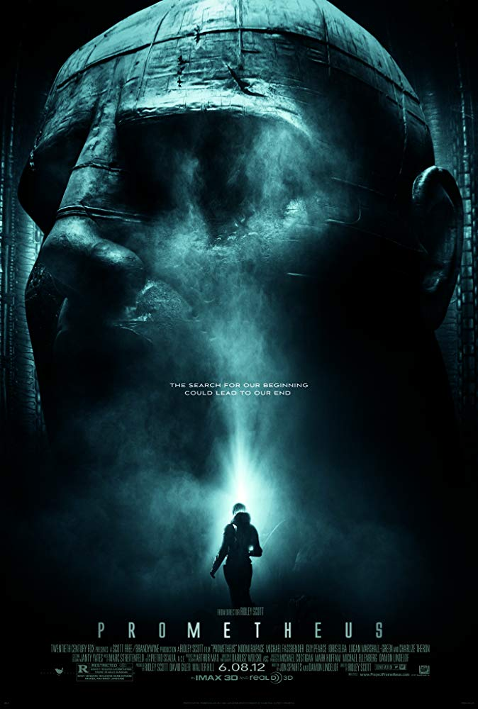

Hobi
Gledanje filmova i serija smatram svojim hobijem, puno vremena sam proveo gledajuci filmove raznih zanrova (najvise sci-fi). Istrazivao sam i trazio filmove raznih rezisera koji i nisu toliko popularni. Zato ce ova stranica ispricati o nekim filmovima koji su na mene ostavili veliki uticaj.
Ovaj film sam gledao sa 17 godina sto je i ostavilo najveci utisak na mene. Cela radnja filma se odvija oko odrastanja decaka u adolescenta i najbolje od svega sto je snimano na jednom liku, to jest snimano je odrastanje decaka cak 12 godina. Verovatno je ostavio veliki utisak na mene jer u filmu, glavni glumac treba da upise koledz i napusta porodicu i osamostaljuje se.
Saznaj vise:Link do filma Boyhood
Reziser: Richard Linklater
Godina: 2014.
Po meni najbolji snimljeni sci-fi ikad, Kjubrik je snimio vanvremenski film davne '68 godine. Film govori o evoluciji majmuna i coveka, kako ce covek dostici svoj vrhunac u evoluciji i traziti nov oblik postojanja (beskonacnost) jer nas fizicki oblik nas ogranicava. Takodje u samom filmu postoji robot HAL9000 koji predstavlja vestacku inteligenciju.
Saznaj vise:Link do filma 2001: A Space Odyssey
Reziser: Stanley Kubrick
Godina: 1968.
Na ovoj listi iako ne nosi neku poruku, morao je doci Tarantinov film. Filmovi sa odlicnim zapletima ogromnom dramom, ali svi znaju kako se njegovi filmovi zavrsavaju :). Drama koja traje tri sata, ali toliko je dobra prica da se prati bez ikakvog problema. Glumu su odlicno izneli Samuel L. Jackson i Kurt Russell.
Saznaj vise:Link do filma The Hateful Eight
Reziser: Quentin Tarantino
Godina: 2015.
Film koji govori o grupi prijatelja koji su zavisni od droga, puno stvari je prikazano u njemu i u kakve probleme dolaze ljudi koji su navuceni na heroin. U filmu je prikazano i nekoliko gadnih scena koje ne bih da prepricavam. 2017. godine je snimljen Trainspotting2 koji predstavlje ponovno skupljanje te druzine.
Saznaj vise:Link do filma Trainspotting
Reziser: Danny Boyle
Godina: 1996.
Naucna fantastika koja je svima poznata, ovaj film obozavam zbog njegovih vizuelnih efekata. Niko nije dostigao taj nivo apstrakcije kao Kamerun (a mozda je to samo do budzeta), ali film svakako vizuelno ostavlja bez reci. Prica nije losa, a radujem se uskorasnjem izlasku novog dela.
Saznaj vise:Link do filma Avatar
Reziser: James Cameron
Godina: 2009.
Film koji govori na neki drugi nacin o nastanku coveka. Reziser je odlucio da pokaze drugu stranu teorije nastanka coveka, jer ne veruje da smo nastali tako kao sto je Darvin rekao. I dovodi u pitanje neke stvari koje su nastale pre nekoliko hiljada godina, a i danas nije jasno kako.
Saznaj vise:Link do filma Prometheus
Reziser: Ridley Scott
Godina: 2012.
Prica se dogadja u severozapadnoj Rusiji, govori o ruskom narodu i o vlasti u malom mestu. Glavni lik se suprotstavlja vlasti i gubi sve sto ima, kao sto je u Bibliji Jov bio bogat covek sa velikom porodicom koji je bio pobozan,djavo je upitao boga da li ce mu on biti odan ako mu oduzme sve? Cela prica filma se prozima kroz spise o Jovu.
Saznaj vise:Link do filma Leviathan
Reziser: Andrey Zvyagintsev
Godina: 2014.
Aleksa Knezevic NRT-19/17